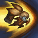
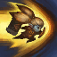

Biografía
Aunque en Runaterra abundan los campeones valientes, pocos son tan tenaces como Poppy. Portando un martillo del doble de su tamaño, esta perseverante yordle ha pasado largos años en busca del ''Héroe de Demacia'', un guerrero mítico que, según dicen, es el único capaz de blandir su arma.
La leyenda cuenta que este héroe es la única persona capaz de desatar el poder del martillo en su totalidad y llevar a Demacia a la cúspide de su grandeza. Aunque Poppy ha intentado dar con el guerrero legendario, buscándolo en los rincones más lejanos del reino, aún no logra cumplir con su misión. En cada ocasión que trató de entregar el martillo a un posible héroe, los resultados fueron desastrosos. En algunos casos, terminaba en la muerte del guerrero. La mayoría hubiera abandonado este deber hace mucho, pero no cualquiera posee el coraje y la determinación de esta heroína indomable.
Alguna vez, Poppy fue una yordle muy diferente. Desde que tiene uso de razón, siempre estuvo en busca de un propósito. Al sentirse ajena a los caprichos caóticos de los demás yordles, prefirió acoger la estabilidad y la estructura dondequiera que las encontrase. Este impulso la condujo a los asentamientos humanos al oeste de Valoran, donde contempló con asombro cómo viajaban las caravanas a lo largo del campo en una fila infinita. Muchas de esas personas lucían andrajosas y agotadas, pero continuaban su marcha en busca de una vida mejor, quizás efímera, que pudiera existir más allá del horizonte.
Un día, sin embargo, vio pasar una caravana distinta. A diferencia del resto de los viajeros, estas personas parecían tener un propósito. Se levantaban exactamente a la misma hora todas las mañanas, alertados por el sonido del cuerno de un vigilante. Comían juntos todos los días a la misma hora, y siempre terminaban al cabo de unos minutos. Armaban y desarmaban sus campamentos con una eficiencia excepcional.
Mientras que los yordles usaban su magia innata para fabricar cosas extraordinarias, estos humanos lograban hazañas igual de sorprendentes a través de la coordinación y la disciplina. Actuaban en sincronía, como si fueran los dientes de un engranaje, y esto los convertía en algo mucho más grande y fuerte que cualquier individuo. Para Poppy, eso era una maravilla más asombrosa que toda la magia del mundo.
Mientras Poppy vigilaba el campamento desde la seguridad de su escondite, pudo ver el brillo de una armadura que emergió de una carpa. Era el comandante del grupo, quien usaba una brigantina de placas de acero brillantes, una sobre la otra, que conformaban la totalidad de la armadura. Su nombre era Orlon, y su sola presencia parecía conmover el alma de todos los presentes. Si alguien se sentía desanimado, era él quien les recordaba por qué seguían adelante. Si alguien caía abatido por el cansancio, él los inspiraba a seguir. Esto le recordaba a Poppy ciertos hechizos de los yordle, pero en este caso, no obraba la magia.
Poppy se aproximó a hurtadillas para ver más de cerca. Sin darse cuenta, seguía a este comandante reluciente, como si el destino mismo le estuviese marcando el camino. Observaba a Orlon mientras dirigía el entrenamiento de sus soldados. No era alguien muy grande, aunque manejaba su enorme martillo de batalla con una celeridad sorprendente. De noche, Poppy escuchaba atentamente las discusiones en voz baja que sostenía con los ancianos del campamento. Fue así que se enteró de sus planes de levantar el campamento y dirigirse al oeste para construir un asentamiento permanente.
La mente de Poppy no paraba de formular preguntas. ¿A dónde se dirigía Orlon? ¿De dónde venía? ¿Cómo logró reunir este meticuloso grupo de viajeros? ¿Habría lugar en él para una yordle? En ese momento, tomó la decisión más importante de su vida: por primera vez se mostraría ante un humano, ya que nunca antes había sentido una conexión con uno de ellos.
La presentación fue un tanto desconcertante; Orlon tenía la misma cantidad de preguntas para Poppy que ella para él, pero no pasó mucho tiempo para que ambos se volvieran inseparables. Orlon se convirtió en su mentor, y ella en devota de su causa. En el campo de entrenamiento, Poppy era una contrincante ejemplar, la única en el batallón de Orlon que no temía atacarlo. No era servil en absoluto: cuestionaba todas sus decisiones con una inocencia casi infantil, como si desconociera que lo único que debía hacer era acatar órdenes sin protestar. Lo acompañó al sitio donde se levantaría el nuevo asentamiento, una nación nueva y ambiciosa que bautizarían con el nombre de Demacia, donde todos serían bienvenidos, sin importar su posición o su pasado, siempre y cuando contribuyeran al bien común.
Orlon se convirtió en una figura querida en todo el reino. Aunque pocos le habían visto blandir su martillo, siempre lo portaba en su espalda, y en poco tiempo, el arma se convirtió en un símbolo venerado de la nación incipiente. Los rumores sugerían que el martillo tenía el poder de aplanar montañas y partir la mismísima tierra en dos.
Orlon le confirió su martillo a Poppy en su lecho de muerte, y con él, la esperanza de un reino eterno. Fue entonces que Orlon le contó la historia de la creación del arma. Además, le confesó que en realidad nunca fue planeada para él: el martillo estaba destinado para el Héroe de Demacia, el único que podría mantener a la nación en pie. Luego de ver a su amigo dar su último suspiro, Poppy juró encontrar a este héroe y colocar el arma en sus manos.
Lo que Poppy tiene en determinación, lo carece en ego, ya que nunca se le ha ocurrido que ella podría ser la heroína descrita por Orlon.
habilidades

 

Embajadora de hierro
CostoNinguno
Poppy lanza su broquel, con lo que obtiene alcance y daño mágico adicional.
El broquel aterrizará en una posición cercana y Poppy podrá recogerlo para conseguir un escudo. Los enemigos podrán pisar el broquel para destruirlo.